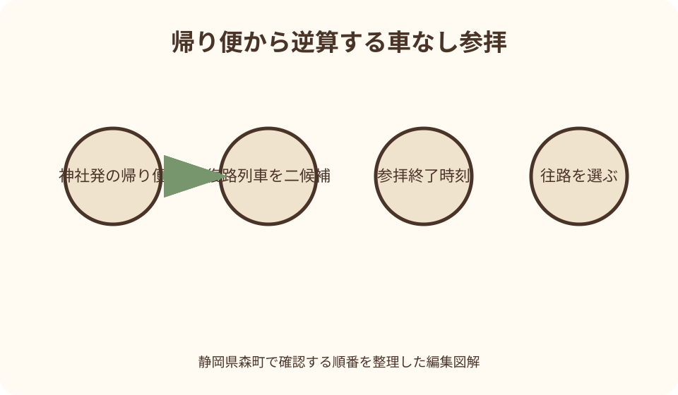
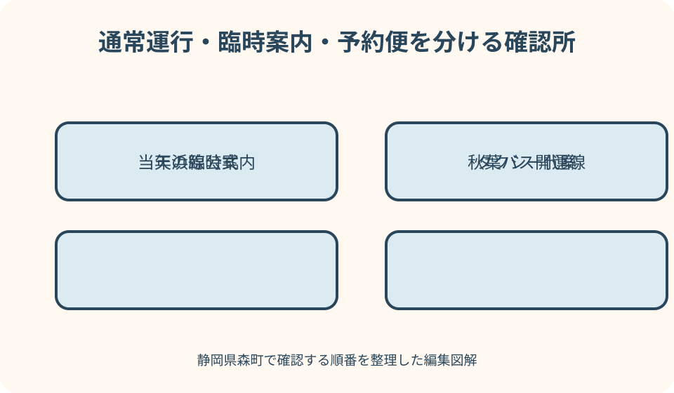

鉄道・路線バス・参拝｜最終確認 2026-08-10
静岡県森町・遠州森駅から小國神社へ車なしで行く｜バス接続と帰路の決め方
車を使わずに遠州森駅から小國神社へ向かう場合、天浜線と秋葉バス小國神社開運線という二つの交通をつなぎます。大切なのは、駅へ着く列車より先に、小國神社から戻るバスと遠州森駅からの復路列車を決めることです。森町営バスの予約便、過去の季節臨時便、現在の開運線を同じものとして扱わず、訪問日の運行カレンダーと時刻を事業者公式で照合します。

編集イラスト往路ではなく小國神社発の帰り便から組み立てる
車なし参拝の制約は、小國神社へ着けるかより、参拝後に駅へ戻れるかです。最初に秋葉バス公式の運行カレンダーを開き、訪問日に小國神社から遠州森駅方面へ戻る便を探します。その便へ間に合う参拝終了時刻を決めてから往路を選びます。
帰り便は本命を一つ、その前後の候補を確認します。最終候補だけを使う計画では、授与所の待ち、食事、混雑、雨による歩行遅れが帰宅全体へ響きます。小國神社のバス乗り場へ戻る時刻を、出発時刻より早く家族の予定表へ書きます。
次に、バスが遠州森駅へ着いた後の天浜線を確認します。鉄道とバスは別事業者であり、自動的に接続を待つとは限りません。乗り換えに必要な徒歩、道路横断、きっぷ、トイレを含めた余裕を置き、復路列車も二候補持ちます。
最後に往路を決めます。天浜線の遠州森駅到着と、開運線の駅発車を並べ、初めてでも乗り場を確認できる余裕を取ります。接続が短過ぎる場合、前の列車で来て駅周辺で待つ方を選び、走って乗り換える予定にしません。
四つの公式情報を役割ごとに分ける
天浜線公式の遠州森駅ページは、駅の時刻表、運賃表、駅設備、問い合わせの入口です。列車についてはここを基礎にします。駅ページにバス乗り換えの表示があっても、バスの運行日や運賃まで天浜線が保証するものではありません。
秋葉バスの小國神社開運線公式は、運行カレンダー、時刻、運賃、支払い、遠州森駅と小國神社の乗り場を確認する場所です。検索結果に残る古いチラシや記事ではなく、訪問日をカレンダー上で選び、同じ日の往路と復路を見ます。
小國神社公式アクセスは、神社側の駐車だけでなく、公共交通での来社案内、境内の位置、繁忙期の注意を確認する場所です。バス会社の運行情報だけでは、参拝日の祭事、交通規制、境内側の変更まで分かりません。
確認したページは、通信が不安定な場面に備えて画面保存しても構いませんが、保存画像を翌月以降の運行根拠にはしません。画像には確認日と対象日が分かるようにし、出発当日は公式ページを再読します。鉄道だけ、バスだけを更新確認して片方を古いままにしないことが重要です。
森町公式のバス案内と地域公共交通法定計画は、町内で天浜線、路線バス、町営バス、タクシーが異なる役割を持つことを理解する資料です。小國神社行きの現在時刻は事業者公式へ戻り、町の計画資料だけで乗車判断をしません。
定期運行・臨時輸送・予約便を同じ言葉で呼ばない
小國神社開運線は、秋葉バスが専用ページと運行カレンダーを設けて案内する路線です。毎日同じ本数で走ると思わず、日ごとの運行内容を確認します。「路線バスだから毎日」「専用車両だから予約制」と名称から推測しません。
紅葉や初詣に合わせ、過去に臨時バスや特別運行が案内されたことが検索で見つかっても、今年もあるとは限りません。臨時という言葉には実施年と日付が不可欠です。訪問年の秋葉バス公式お知らせに掲載がなければ、通常の運行カレンダーだけで計画します。
森町営バスの大河内線・吉川線には予約が必要な便があります。しかし、それは町営バスの規則です。小國神社開運線へ同じ予約期限や連絡先を当てません。開運線で予約が必要か不明なら、秋葉バスの当該ページか同社へ直接確認します。
団体利用、車いす、大きな荷物、ベビーカーなど個別対応が必要な場合も、通常乗車と分けて問い合わせます。乗れるだろうと当日運転士へ任せず、人数、利用日、駅、目的地、必要な支援を秋葉バスへ伝えます。
遠州森駅で乗り場へ移る時間を確保する
遠州森駅公式は、駅員、一般トイレ、公衆電話、バス・タクシー乗り換えを設備情報に掲載しています。一方、点字ブロックは構内とホームとも非対応の表示です。移動支援が必要な人は、天浜線へ事前相談し、当日の短い乗換だけで解決しません。
列車を降りたら、最初に帰りのホームと駅入口を確認します。その後、秋葉バス公式の乗り場案内と現地標識を照合します。地図上で停留所が近くても、道路横断や車の出入りがあります。発車が迫っていても車道を斜めに渡りません。
乗車前に運賃と支払い方法を秋葉バス公式で確認し、必要な支払い手段をすぐ出せるようにします。天浜線の乗車券や交通系の扱いがバスと同じとは限りません。乗車口で財布や荷物を広げず、整理券など現地の案内に従います。
接続待ちが長い日は、駅から遠くへ歩くより、乗り場、トイレ、飲料、帰りの列車を確認する時間にします。町なかへ出る場合も、バス発車より十分早く駅へ戻り、店の営業や会計時間を理由に乗車を遅らせません。

バス車内と小國神社到着後の動きを先に決める
乗車したら、降車停留所と支払い手順を確認します。専用車両でない場合があるという秋葉バスの案内もあるため、車体の見た目だけで便を判断しません。乗車時に行先表示を読み、必要なら運転士へ小國神社へ行く便かを短く確認します。
荷物は通路へ置かず、急停車でも動かないようにします。写真撮影、車窓、バス限定の案内に気を取られて、降車準備を遅らせません。子ども連れは降車直前に荷物をまとめ始めず、停車中に安全に移動できるよう役割を決めます。
小國神社へ着いたら、最初に帰りの乗り場を確認します。降りた場所と乗る場所が同じ向きとは限らないため、秋葉バスの乗り場図と現地標識を見ます。集合場所の写真を撮り、同行者全員へ帰着時刻を伝えます。
参拝、御朱印、食事、ことまち横丁、季節の散策をすべて同じ優先度にしません。第一目的を参拝とし、残り時間で一つを選びます。帰りの乗り場へ戻る時刻になったら、列や買い物の途中でも切り上げられる計画にします。
待ち時間を参拝時間へ勝手に変換しない
時刻表上の到着から出発までが二時間でも、二時間すべてを境内で使えるわけではありません。降車、乗り場確認、手洗い、参道往復、混雑、乗車待ちを差し引きます。バス停へ戻る安全余裕を固定し、残りを参拝時間とします。
雨の日は傘の開閉、濡れた路面、荷物の収納で歩行が遅くなります。宮川沿いや自然の地面へ広げず、社殿までの参拝を中心にします。靴や衣服が濡れた状態でバスへ乗る前に、周囲を汚さないようタオルと袋を用意します。
食事待ちが長い場合、注文後に帰り便を変えられるとは限りません。注文前に提供までの目安を店へ尋ね、難しければ持ち帰り可能なものか、駅へ戻ってからの食事へ切り替えます。バス車内で飲食してよいかは事業者の規則に従います。
授与所や御朱印も、受付と待ち時間が変動します。受けられなかった場合のために、参拝そのものを完了目標にします。限定品のため帰り便を逃す予定にはせず、次回訪問や郵送対応の有無を神社公式で確認します。
タクシー代案は帰れなくなってから探さない
遠州森駅公式はタクシー乗り換えを掲載していますが、駅前または神社前に常時車両がいる保証ではありません。バス接続が成立しない日、歩行支援が必要な日、帰り便が少ない日は、出発前にタクシー事業者へ配車可否を確認します。
予約時は、天浜線の到着予定、人数、荷物、乗車場所、小國神社のどこで降りたいかを伝えます。帰路も必要なら、参拝終了時刻ではなく、神社側の乗車場所と迎車時刻を具体的に相談します。繁忙期は道路混雑で配車が難しい可能性があります。
費用は距離だけで断定せず、事業者へ概算を尋ねます。複数人ならバスとの差額だけでなく、乗換待ち、歩行、帰りの確実性も比較します。片道バス、片道タクシーという組み合わせも、両方を事前に確保できる場合に選びます。
当日バスを逃してから、流しのタクシーが来ると期待しません。次便、配車、家族の迎え、神社への相談を順に検討し、徒歩で遠州森駅へ向かい始めないことが重要です。距離、道路、日没を確認せず歩く代案は安全ではありません。
紅葉期は色づきより輸送条件を先に見る
紅葉を目的にする日は、小國神社公式の季節情報で色づきを確認します。ただし、見頃情報だけで出発を決めず、秋葉バスの訪問日運行と往復接続を先に成立させます。紅葉が良くても帰り便が合わなければ、別日かタクシーへ変更します。
道路混雑があると、バスも通常どおりの所要時間で進むとは限りません。遠州森駅での復路列車へ短い接続を置かず、遅れを吸収できる候補を選びます。最終列車だけへ接続する旅程は避けます。
境内では撮影者と参拝者が同じ道を使います。橋や参道を塞がず、三脚や撮影場所の規則を神社案内で確認します。写真のため帰りの集合を遅らせず、同行者とはぐれた場合の連絡場所をバス停付近に決めます。
過去に行われた照明演出や延長運行を現在もあると考えません。実施年、期間、終了時刻、帰りの交通を公式で確認できない場合、日中の通常運行で計画します。暗い時間に徒歩代案へ切り替える予定は作りません。
初詣は日中の通常参拝と別の行程として考える
初詣期は、参拝者、車、出店、交通規制で通常と環境が変わります。前年の臨時バス記事を今年の運行表として使わず、秋葉バスと小國神社の当年案内を確認します。運行が確認できない時間帯は、車なしで行ける前提を置きません。
深夜や早朝の参拝を希望しても、天浜線とバスの両方が動いている必要があります。神社が開いていることと公共交通があることは別です。片道だけ成立する計画を避け、往復の運行を同じ日付で確認します。
混雑時はバス停へ早く戻り、係員の案内を確認します。通常の乗り場が変わる、列が形成される、定員で希望便に乗れない可能性を考えます。寒さ対策をし、列から離れる人と荷物を持つ人を決めます。
初詣で交通が成立しない場合は、通常期の日中参拝へ変えることが最も確実な代案です。日付にこだわって危険な徒歩や高額な突発移動を選ばず、家族と参拝の目的を話し合います。

良い点
天浜線と小國神社開運線をつなげれば、運転や駐車をせずに参拝できます。紅葉や初詣で道路が混みやすい時期にも、運行が確認できる日は公共交通という選択肢を持てます。運転者だけが疲れる家族旅行を避けられます。
秋葉バスが専用ページで運行カレンダー、乗り場、運賃、支払いを案内しているため、二次的な経路記事だけに頼らず確認できます。天浜線と神社も公式ページを持ち、三者の役割を分けて判断できます。
車がないから森町観光を諦めるのではなく、参拝一つに目的を絞れば往復を組み立てられます。ことまち横丁や紅葉散策を追加するかは残り時間で選べます。移動を先に確定することで、境内では落ち着いて過ごせます。
注文したい点
利用者は天浜線と秋葉バスの二つの時刻表を照合する必要があります。遠州森駅到着から小國神社行き、神社発から復路列車までを日付別に確認できる公式接続画面があれば、短過ぎる乗換や片道だけの計画を減らせます。
定期的に走る便、特定日の運行、季節の臨時輸送、町営バスの予約便が検索上で混ざりやすい状態です。各案内に運行主体、対象年、予約の要否、終了済み表示を明確に付け、古いページから現行ページへ案内してほしいところです。
神社側の乗り場では、混雑時の列、満員時の扱い、臨時乗り場、タクシー乗降場所を一つの図から確認できると安心です。通常期と繁忙期を分けて示せば、参拝者が道路上でスマートフォンを操作する時間を減らせます。
代案・結論
計画順は、帰りの神社発バス、遠州森駅からの復路列車、往路バス、駅への到着列車です。この順に公式時刻を照合し、接続余裕を入れます。時刻は記事から写さず、訪問日の秋葉バスと天浜線公式を使います。
開運線、町営バス予約便、過去の臨時便を混同しません。運行主体のロゴと連絡先まで確認し、不明なら当該事業者へ尋ねます。「以前乗れた」「検索に時刻が出た」という記憶で駅へ向かいません。
接続が成立しない場合は、事前予約したタクシー、参拝日の変更、目的地を町なかへ変更する順で考えます。小國神社まで歩くことを無条件の代案にせず、日没、道路、距離を踏まえます。
紅葉・初詣時は、通常交通に神社最新案内と秋葉バスの当年お知らせを追加します。家族メモには帰り便、乗り場へ戻る時刻、復路列車二候補、タクシー連絡先を残します。参拝内容より先に帰路を共有します。
大石の視点
私は車なしの小國神社参拝を案内するとき、最短到着より帰れることを優先します。往路の検索結果は多くても、帰りの選択肢は時間と運行日で狭まるからです。帰路を先に決めることが、参拝中の焦りも減らします。
また、バスという一語で全部をまとめません。天浜線、秋葉バス、町営バス、タクシーは担当も予約方法も違います。誰の公式情報を見ているかを常に確かめることが、地域交通を正しく使う第一歩です。
小國神社では予定を達成するより、参拝を丁寧に終えることを勧めます。帰り便に間に合う範囲で歩き、買い物や御朱印は次回へ残してもよいのです。公共交通で無事に往復できれば、それ自体が森町を長く訪ねるための実用的な経験になります。
公式情報・確認先
掲載内容は次の一次情報を基礎に整理しました。営業、料金、催し、交通は変わるため、出発前または手続き前にリンク先で最新情報を確認してください。
- 森町営バスのご案内（静岡県森町、2026-08-10確認）
- 森町地域公共交通法定計画（静岡県森町、2026-08-10確認）
- 遠州森駅 路線と駅情報（天竜浜名湖鉄道、2026-08-10確認）
- 小國神社開運線（秋葉バスサービス、2026-08-10確認）
- 交通案内（小國神社、2026-08-10確認）